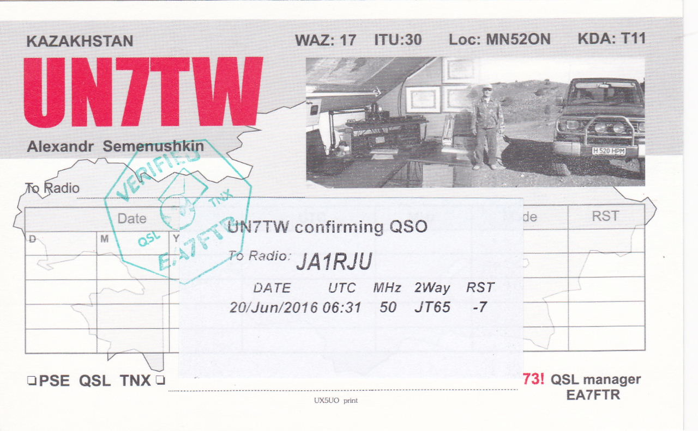

Flash ! DX
|
Who said 6M was a dead band ?
|
(注)
このReportをご覧になる方へ
[Back Issues Oct.2016]
TIME:UTC(JST-09:00)
Report from JA1RJU(PM95sq)
31.Oct.2016(00:00a)
Report from JA1RJU(PM95sq)
30.Oct.2016(15:00b)
Report from JA1RJU(PM95sq)
29.Oct.2016(15:00d)
DU1EV/B 05:00- 50.007.9 CW Beacon RST599
DU7/PA0HIP 05:04 50.276-0.385 WSJT JT65a -08dB (QSO with JA1)
DU7/PA0HIP 05:18 50.276-0.140 WSJT JT65a -10dB (QSO with JA5)
DU7/PA0HIP 05:31 50.276-0.183 WSJT JT65a CQ -08dB
DU7/PA0HIP 05:38 50.276-0.160 WSJT JT65a -10dB (QSO with JA1)
VK4WTN 05.44 50.276-0.057 WSJT JT65a CQ -19dB
VK4WTN 05:46 50.276-0.057 WSJT JT65a CQ -18dB
VK4WTN 05:53 50.276-0.054 WSJT JT65a CQ -17dB
VK4WTN 05:57 50.276-0.059 WSJT JT65a -18dB (QSO with JH5)
VK4WTN 06:09 50.276-0.059 WSJT JT65a CQ -14dB
|
◎英国のDX-GroupのFSDXAのメンバーによる「Six Gs Chatham Island DX-pedition」がスタートした。今回の運用予定は、26.Oct-09.Nov.2016。オペレーターはRSGB会長のG3BJ他、G3SVL、G3TXF、G3WPH、G3XTT(CDXA会長)、G4JKS、G4TSH。
28MHzでも良く入感していて、日中はJAのパイルとなっていてもQSOは難しくない。今のところ6mでの運用は予定されていないのが残念！。
(Chatham Islands=QSL: G3TXF)
|
Report from JA1RJU(PM95sq)
28.Oct.2016(15:00b)
Report from JA1RJU(PM95sq)
27.Oct.2016(15:00d)
VK6KXW 05:13 50.276-0.276 WSJT JT65a -13dB (QSO with JA5)
VK6KXW 05:19 50.276-0.619 WSJT JT65a CQ -13dB
VK6KXW 05:21 50.276-0.276 WSJT JT65a -12dB (QSO with JA3)
T88AX 06:25 50.276-0.412 WSJT JT65a -06dB (QSO with JA2)
T88AX 06:29 50.276-0.409 WSJT JT65a -06dB (QSO with JA1)
↓ ↓ ↓ ↓
T88AX 06:41 50.276-0.415 WSJT JT65a -06dB (QSO with JA1-5)
T88AX 06:53 50.276-0.415 WSJT JT65a CQ -12dB
Report from JA1RJU(PM95sq)
26.Oct.2016(15:00d)
(JA6YBR/b 04:00- 50.017 CW Beacon Es JA6"s)
6L0NJ/B 05:40- 50.051 CW Beacon
VK6KXW 06:21 50.276-0.145 WSJT JT65a -14dB (QSO with JA5)
T88AX 06:31 50.276-0.016 WSJT JT65a CQ -04dB (PJ77)
↓ ↓ ↓ ↓
T88AX 06:35 50.276-0.016 WSJT JT65a CQ -06dB
T88AX 06:39 50.276-0.016 WSJT @ JT65a -04dB/-09bD (50W QSO)
T88AX 07:17 50.276-0.019 WSJT JT65a CQ -07dB
↓ ↓ ↓ ↓
T88AX 07:27 50.276-0.019 WSJT JT65a -07dB (QSO with JA1-9's)
DU7/PA0HIP 07:27 50.110 CW CQ CQ RST599
T88AX 07:31 50.276-0.019 WSJT JT65a -03dB (QSO with JA1)
VK8VF/b 07:40- 50.310 CW Beacon
T88AX 07:47 50.276-0.019 WSJT JT65a -03dB (QSO with JA1)
T88AX 07:53 50.276-0.016 WSJT JT65a -05dB (QSO with JA1)
Report from JA1RJU(PM95sq)
25.Oct.2016(15:00b)
Report from JA1RJU(PM95sq)
24.Oct.2016(15:00b)
Report from JA1RJU(PM95sq)
23.Oct.2016(15:00b)
Report from JA1RJU(PM95sq)
22.Oct.2016(15:00b)
Report from JA1RJU(PM95sq)
21.Oct.2016(15:00b)
Report from JA1RJU(PM95sq)
20.Oct.2016(15:00b)
Report from JA1RJU(PM95sq)
19.Oct.2016(15:00d)
KG6DX 06:11 50.276+0.196 WSJT JT65a CQ -08dB
KG6DX 06:15 50.276+0.196 WSJT JT65a CQ -08dB
(S59A 21:16 50.192.0 WSJT JT65a -21dB (JR6EXN EME QSO)
(F8GGD 21:06 50.192.0 WSJT JT65a -22dB (JR6EXN EME QSO)
Report from JA1RJU(PM95sq)
18.Oct.2016(15:00c)
VK4BLK 04:24 50.276+0.242 WSJT JT65a CQ -04dB
VK4BLK 04:28 50.276+0.261 WSJT JT65a CQ -05dB
VK4BLK 04:46 50.276-0.216 WSJT JT65a -05dB (QSO with JA2)
VK4BLK 04:50 50.276-0.450 WSJT JT65a -08dB (QSO with JA5)
VK4BLK 05:10 50.276 WSJT @ JT65a -05dB/-01dB (10W QSO)
VK4BLK 05:32 50.276+0.358 WSJT JT65a CQ -05dB
Report from JA1RJU(PM95sq)
17.Oct.2016(15:00b)
Report from JA1RJU(PM95sq)
16.Oct.2016(15:00c)
V73SIX/B 03:55- 50.011.5 CW Beacon
VK4UH 05:15 50.276+0.043 WSJT JT65a -08dB (QSO with JA5)
VK4WTN 05:22 50.276-0.237 WSJT JT65a -16dB (QSO with JA5)
VK4CZ 05:28 50.276+0.038 WSJT JT65a -06dB (QSO with JA5)
VK4WTN 05:36 50.276-0.240 WSJT JT65a CQ -17dB
VK4WTN 05:38 50.276-0.240 WSJT JT65a CQ -11dB
VK4WTN 05:41 50.276-0.425 WSJT JT65a -18dB (QSO with JA3)
VK4UH 05:48 50.276+0.229 WSJT JT65a -05dB (QSO with JA1)
VK4WTN 05:53 50.276-0.425 WSJT JT65a -09dB (QSO with JA1)
VK4UH 05:54 50.276+0.226 WSJT JT65a -08dB (QSO with JA2)
VK4WTN 06:00 50.276-0.057 WSJT JT65a -12dB (QSO with JA2)
Report from JA1RJU(PM95sq)
15.Oct.2016(15:00d)
V73SIX/B 05:10- 50.011.5 CW Beacon weak
V73SIX/B 05:45- 50.011.5 CW Beacon RST579
HL5/VK6JJJ 09:29 50.276 WSJT JT65a CQ -06dB
Report from JA1RJU(PM95sq)
14.Oct.2016(15:00b)
Report from JA1RJU(PM95sq)
13.Oct.2016(15:00b)
Report from JA1RJU(PM95sq)
12.Oct.2016(15:00c)
V73SIX/B 04:40- 50.011.5 CW Beacon weak
VK4BLK 06:06 50.276-0.272 WSJT JT65a CQ -19dB
VK4BLK 06:12 50.276-0.269 WSJT JT65a CQ -23dB
Report from JA1RJU(PM95sq)
11.Oct.2016(15:00c)
VK6RSX/b 06:35- 50.304 CW Beacon RST559 QSB
Report from JA1RJU(PM95sq)
10.Oct.2016(15:00c)
V73SIX/B 03:35- 50.011.5 CW Beacon weak
V73SIX/B 05:25- 50.011.5 CW Beacon RST599
|
◎今日はV73SIX/Bが強力に入感していた。そろそろ午後からのVKが聞こえ出しても良い季節なのだが、今年はあまり50.280-300MHzのBEACONは確認出来なかった。遅い時間帯に西日本でVK6/8のBEACONの入感がリポートされているが北日本では聞こえていない。
|
Report from JA1RJU(PM95sq)
09.Oct.2016(15:00b)
●第37回全市・全郡コンテスト
Report from JA1RJU(PM95sq)
08.Oct.2016(15:00b)
●第37回全市・全郡コンテスト
Report from JA1RJU(PM95sq)
07.Oct.2016(15:00b)
Report from JA1RJU(PM95sq)
06.Oct.2016(15:00c)
|
◎西日本各地に大きな被害を与えた台風18号は山陰沖を通過後、熱帯低気圧に変わったが、強風エリアを残したまま東進、能登半島を通過し東北地方を横断、北海道南東へ抜けた。日本海を通過時の零時頃には北陸金沢市で風速43mを超える強風を記録した。この時間帯に関東エリアでも短時間ながら強風の影響を受けた。6日の午前中は関東地方は"台風一過"の晴れとなって東京都心では気温も32度を超える”真夏日”となっている。
|
Report from JA1RJU(PM95sq)
05.Oct.2016(15:00c)
◎10月4-5日に沖縄本島・久米島などに大きな被害を与えた台風18号が、南シナ海から対馬沖を通過、韓国南部に上陸後、日本本土上空の偏西風に乗ってスピードを上げながら日本海を北上している。台風はこの後、北日本を横断して太平洋に抜けるコースが予想されている。今回の台風18号は”風”台風の模様で大きな強風域を伴っており、日本海を通過時には関東エリアでも強風の影響を受けそう。関東・甲信に影響が出るのは5日夜半と予想されている。
台風に備え今回もアンテナを降ろして被害が及ぶのを避けているものの、今年は例年になく台風が本土に上陸するため”クランクアップ/ダウン”で台風対策で忙しい一年と成っている。
|


ヨーロッパ(GL:KN89gm)ともWSJTなら50W以下でもQSOが可能


2016年の夏にWSJT(JT65a)でアクティブにQRVしていたUN7TW
Report from JA1RJU(PM95sq)
04.Oct.2016(15:00b)
Report from JA1RJU(PM95sq)
03.Oct.2016(15:00d)
V73SIX/B 05:45- 50.011.5 CW Beacon weak
KG6DX 06:05 50.276-0.058 WSJT JT65a CQ -20dB
KG6DX 06:07 50.276 WSJT JT65a -12dB (QSO with JA5)
KG6DX 06:23 50.276 WSJT@ JT65a -05dB/-01dB (20W QSO)
VK6RSX/b 06:35- 50.304 CW Beacon
KG6DX 06:45 50.276+0.526 WSJT JT65a -09dB (QSO with JA1)
DU1EV/B 07:10- 50.007.9 CW Beacon
Report from JA1RJU(PM95sq)
02.Oct.2016(15:00b)
Report from JA1RJU(PM95sq)
01.Oct.2016(15:00b)